Visual index · An atlas to explore
DIAGRAM LIBRARY
See the system.
Explore its forms.
Browse the existing diagrams by chapter, question and notation. Open any card for its explanation, original image, source code and interactive Mermaid view where available.
Reference catalogue
The diagrams
85 diagrams: 77 in Mermaid and 8 in PlantUML. The first two characters of an ID give the chapter; 00 is the big picture. Each diagram has a page with its image, what it shows, its steps where it is a sequence, and its code.
The original diagram previews, questions, Mermaid editor and PNG links are preserved. Browse them by phase or use the filter above.
Cross-cutting and related pathways
BUDGET PHASE
Preparation
01. Planning and investment programming
-
 01aMermaid flowchartFrom development plan to budget proposal: the chain of plans, national and localQuestion: which plans must a program or project appear in before it can enter the budget, and who approves each plan?Open diagram
01aMermaid flowchartFrom development plan to budget proposal: the chain of plans, national and localQuestion: which plans must a program or project appear in before it can enter the budget, and who approves each plan?Open diagram -
 01bMermaid sequence diagramInvestment programming: how a project enters the PIP and TRIP and reaches the budgetQuestion: who does what, in which system, from the call for projects to the point where the project may be proposed for funding?Open diagram
01bMermaid sequence diagramInvestment programming: how a project enters the PIP and TRIP and reaches the budgetQuestion: who does what, in which system, from the call for projects to the point where the project may be proposed for funding?Open diagram
02. The fiscal framework

03. Budget preparation
-
 03aMermaid sequence diagramBudget preparation: from the fiscal program to the President's budget (example: FY 2027 budget, prepared in 2026)Question: who gives what to whom, in which order, between the decision on the total budget and the submission of the proposed budget to Congress?Open diagram
03aMermaid sequence diagramBudget preparation: from the fiscal program to the President's budget (example: FY 2027 budget, prepared in 2026)Question: who gives what to whom, in which order, between the decision on the total budget and the submission of the proposed budget to Congress?Open diagram -
 03bPlantUML activity diagram with lanesBudget preparation by office (example: FY 2027 budget, prepared in 2026)Question: which office is responsible for each activity of budget preparation, which activities run in parallel, and where are the decision points?Open diagram
03bPlantUML activity diagram with lanesBudget preparation by office (example: FY 2027 budget, prepared in 2026)Question: which office is responsible for each activity of budget preparation, which activities run in parallel, and where are the decision points?Open diagram -
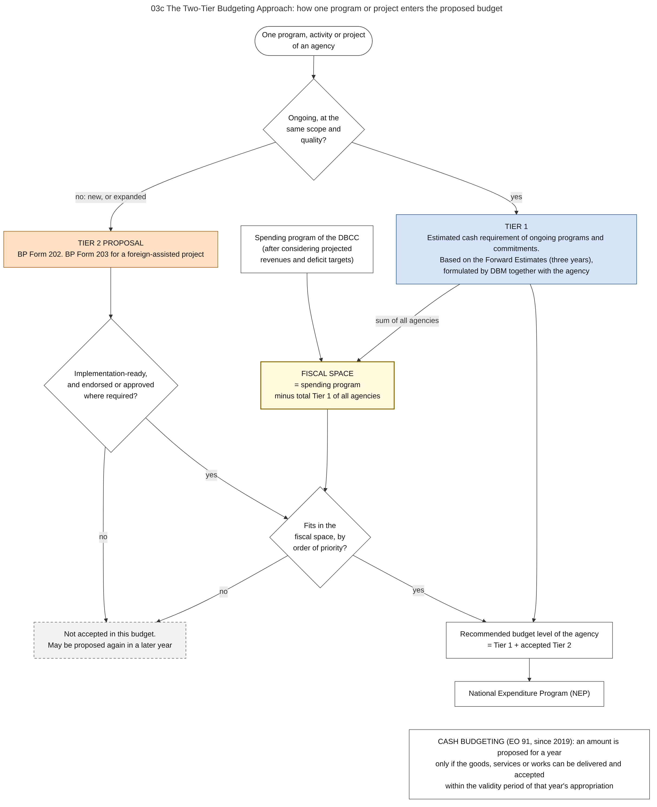
03cMermaid flowchartThe Two-Tier Budgeting Approach: how one program or project enters the proposed budgetQuestion: why are some proposals accepted almost automatically while others must compete, and what decides the amount of money available for competition?Open diagram -
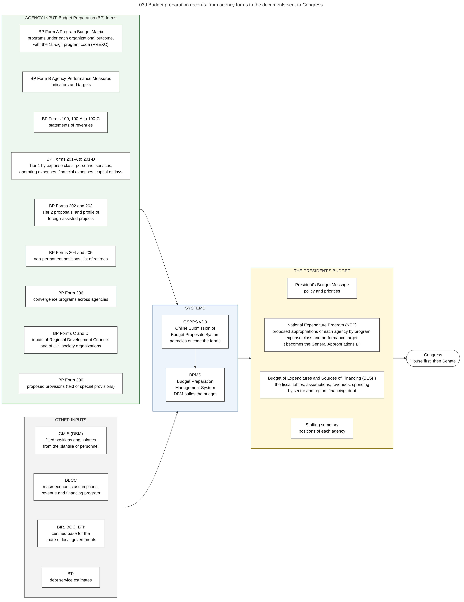
03dMermaid flowchartBudget preparation records: from agency forms to the documents sent to CongressQuestion: which forms does an agency complete, where do they go, and which budget documents are built from them?Open diagram
BUDGET PHASE
Legislation
04. Budget legislation
-
04aMermaid sequence diagramBudget legislation: from the President's budget to the General Appropriations Act (GAA)Question: which body acts on the budget bill at each stage, what may each body change, and what happens if no law is passed before the fiscal year starts?Open diagram
-
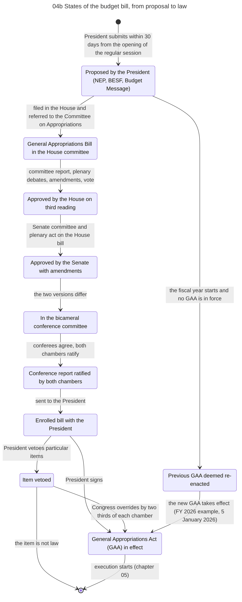
04bMermaid state diagramStates of the budget bill, from proposal to lawQuestion: in which state is the budget of a fiscal year at a given date, and which act moves it to the next state?Open diagram -
04cMermaid flowchartKinds of appropriation: the legal bases on which public money may be paidQuestion: the Constitution says that no money may be paid from the Treasury except under an appropriation made by law. Which kinds of such laws exist, and how long does each one stay valid?Open diagram
BUDGET PHASE
Execution
05. Release: allotment and cash authority
-
 05aMermaid sequence diagramRelease of funds: two separate authorities, allotment (to commit) and cash authority (to pay). Example: FY 2026Question: after the GAA takes effect, what must an agency hold before it may sign a contract, and what must it hold before it may pay?Open diagram
05aMermaid sequence diagramRelease of funds: two separate authorities, allotment (to commit) and cash authority (to pay). Example: FY 2026Question: after the GAA takes effect, what must an agency hold before it may sign a contract, and what must it hold before it may pay?Open diagram -
 05bMermaid flowchartWhich release document applies to one budget item (FY 2026 rules)Question: for one item of appropriation, does the agency already have its allotment when the GAA takes effect, or must it ask DBM first, and with which document does DBM answer?Open diagram
05bMermaid flowchartWhich release document applies to one budget item (FY 2026 rules)Question: for one item of appropriation, does the agency already have its allotment when the GAA takes effect, or must it ask DBM first, and with which document does DBM answer?Open diagram -
 05cMermaid state diagramStates of one budget line, and the exits at each stageQuestion: an amount is in the budget but was not spent. At which stage did it stop, and who had the power to advance it?Open diagram
05cMermaid state diagramStates of one budget line, and the exits at each stageQuestion: an amount is in the budget but was not spent. At which stage did it stop, and who had the power to advance it?Open diagram -
 05dMermaid flowchartKinds of disbursement authority: who issues each one, to whom, and what it allowsQuestion: an allotment contains no cash. Which document gives an agency the right to make payments, and which one applies in each situation?Open diagram
05dMermaid flowchartKinds of disbursement authority: who issues each one, to whom, and what it allowsQuestion: an allotment contains no cash. Which document gives an agency the right to make payments, and which one applies in each situation?Open diagram -
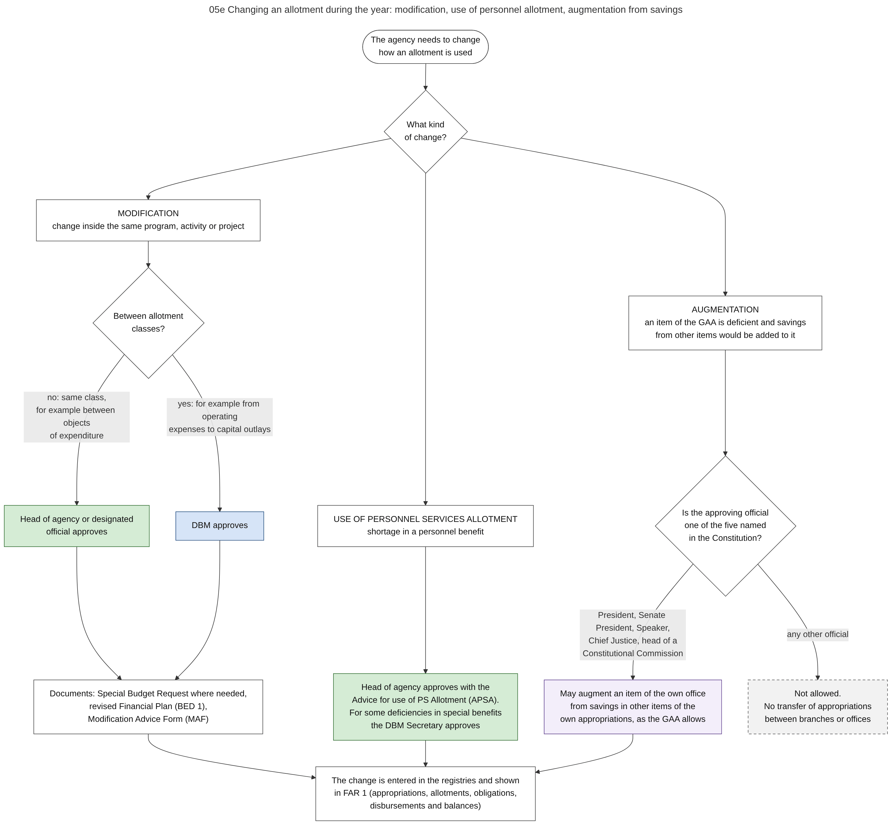
05eMermaid flowchartChanging an allotment during the year: modification, use of personnel allotment, augmentation from savingsQuestion: an agency needs to move money from one use to another during the year. Who may approve the change, and with which document?Open diagram
06. Procurement
-
 06aMermaid flowchartProcurement planning: from a need to an approved procurement plan, aligned with the budget calendarQuestion: what must exist before an agency may start a procurement, and how does the procurement plan follow the budget from proposal to law?Open diagram
06aMermaid flowchartProcurement planning: from a need to an approved procurement plan, aligned with the budget calendarQuestion: what must exist before an agency may start a procurement, and how does the procurement plan follow the budget from proposal to law?Open diagram -
 06bMermaid sequence diagramCompetitive bidding under the New Government Procurement Act (RA 12009): who does what, with the time limitsQuestion: from the request of the end-user to the notice to proceed, which body acts at each step, and how long may each step take?Open diagram
06bMermaid sequence diagramCompetitive bidding under the New Government Procurement Act (RA 12009): who does what, with the time limitsQuestion: from the request of the end-user to the notice to proceed, which body acts at each step, and how long may each step take?Open diagram -
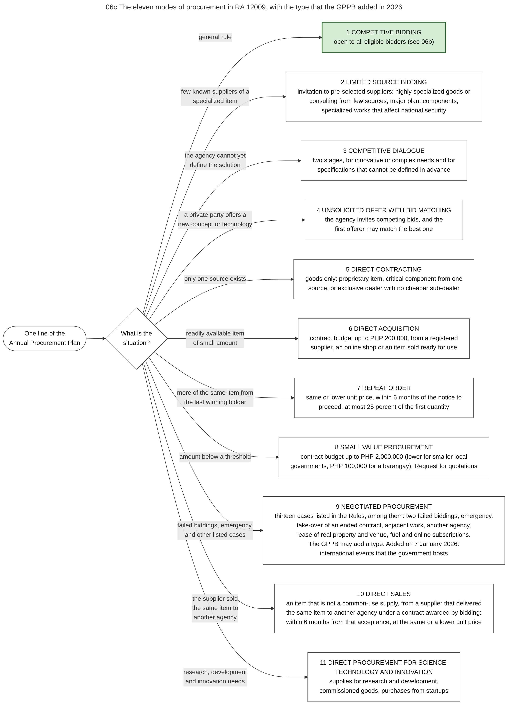
06cMermaid flowchartThe eleven modes of procurement in RA 12009, with the type that the GPPB added in 2026Question: competitive bidding is the general rule. Which other modes does the law allow, and for what kind of situation is each one meant?Open diagram -
 06dPlantUML activity diagram with lanesCompetitive bidding under RA 12009: decisions, loops and exitsQuestion: where can a competitive bidding stop or return to an earlier step, and who decides at each of these points?Open diagram
06dPlantUML activity diagram with lanesCompetitive bidding under RA 12009: decisions, loops and exitsQuestion: where can a competitive bidding stop or return to an earlier step, and who decides at each of these points?Open diagram -
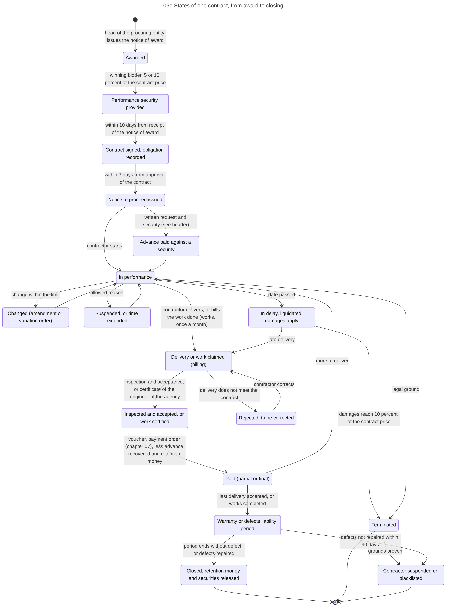
06eMermaid state diagramStates of one contract, from award to closingQuestion: after the award, through which states does a contract pass, which events remove it from the normal path, and which limit applies to each event?Open diagram -
06fMermaid flowchartA contract that lasts more than one year: the Multi-Year Contractual Authority (MYCA)Question: an appropriation is valid for one year, but a bridge takes three years to build. What allows an agency to sign one contract for the whole work, and where does the money of each year come from?Open diagram
-
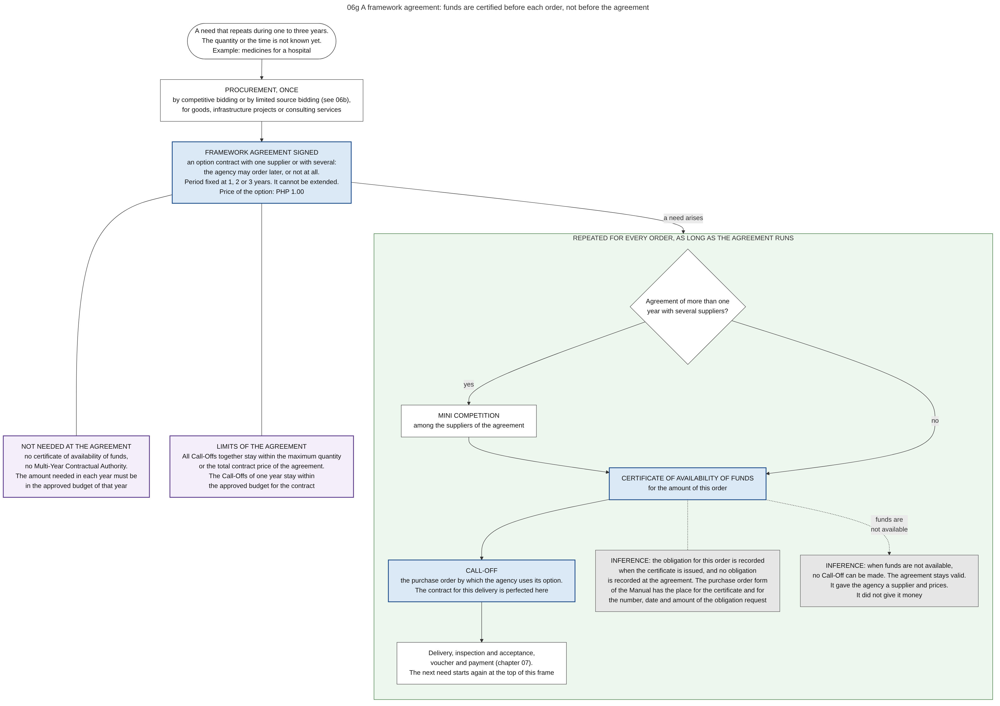
06gMermaid flowchartA framework agreement: funds are certified before each order, not before the agreementQuestion: an agency fixes a supplier and prices now, and does not know yet how much it will buy, or when. At which moment must funds be certified, and at which moment is the government bound to pay?Open diagram
07. Obligation, verification and payment
-
 07aMermaid sequence diagramFrom obligation to payment: who certifies what, and which record each step writes (goods bought by a national agency, paid by payment order)Question: for one payment to a supplier, which officer certifies which fact, in which document, which record is written at each step, and which checks are made by someone outside the agency before the money leaves?Open diagram
07aMermaid sequence diagramFrom obligation to payment: who certifies what, and which record each step writes (goods bought by a national agency, paid by payment order)Question: for one payment to a supplier, which officer certifies which fact, in which document, which record is written at each step, and which checks are made by someone outside the agency before the money leaves?Open diagram -
 07bPlantUML activity diagram with lanesThe three meeting points before a payment, and the record written at each step (national agency, contract for goods)Question: which lines of work must BOTH be finished before the next step of a payment may happen, and which record does each unit write at its step?Open diagram
07bPlantUML activity diagram with lanesThe three meeting points before a payment, and the record written at each step (national agency, contract for goods)Question: which lines of work must BOTH be finished before the next step of a payment may happen, and which record does each unit write at its step?Open diagram -
 07cMermaid flowchartThe chain of certifications for one payment: who signs, what the signature states, and who checks itQuestion: a payment depends on several signatures. What exactly does each signature assert, and is that assertion checked by anyone outside the agency before the money leaves?Open diagram
07cMermaid flowchartThe chain of certifications for one payment: who signs, what the signature states, and who checks itQuestion: a payment depends on several signatures. What exactly does each signature assert, and is that assertion checked by anyone outside the agency before the money leaves?Open diagram -
 07dMermaid sequence diagramPayment and settlement: how money moves from the Treasury Single Account to the payee (Modified Disbursement System)Question: the agency holds no cash for its regular budget. Through which accounts does the money pass when the agency pays, at which moment does cash leave the Treasury, and on which date does each party record the payment?Open diagram
07dMermaid sequence diagramPayment and settlement: how money moves from the Treasury Single Account to the payee (Modified Disbursement System)Question: the agency holds no cash for its regular budget. Through which accounts does the money pass when the agency pays, at which moment does cash leave the Treasury, and on which date does each party record the payment?Open diagram -
 07eMermaid flowchartWays in which a national agency settles a paymentQuestion: which instrument does an agency use to pay, depending on who is paid and from which source?Open diagram
07eMermaid flowchartWays in which a national agency settles a paymentQuestion: which instrument does an agency use to pay, depending on who is paid and from which source?Open diagram -
 07fMermaid state diagramStates of one cash advance, from grant to liquidationQuestion: a cash advance leaves the Treasury before any delivery is accepted. How does the government ensure that the money is later accounted for?Open diagram
07fMermaid state diagramStates of one cash advance, from grant to liquidationQuestion: a cash advance leaves the Treasury before any delivery is accepted. How does the government ensure that the money is later accounted for?Open diagram -
 07gMermaid flowchartWhen a step fails: who acts, where the transaction continues, and which record shows itQuestion: diagrams 07a and 07b show the path when every check succeeds. What happens when one check fails, and where can a reader of the records see that it failed?Open diagram
07gMermaid flowchartWhen a step fails: who acts, where the transaction continues, and which record shows itQuestion: diagrams 07a and 07b show the path when every check succeeds. What happens when one check fails, and where can a reader of the records see that it failed?Open diagram -
 07hMermaid flowchartKinds of payment: what creates the claim, what proves it before payment, and what the books record at that timeQuestion: a purchase is paid after a contract and an accepted delivery. What replaces these two things in the other kinds of payment, which document proves the claim before the money leaves, and what do the books show at that moment?Open diagram
07hMermaid flowchartKinds of payment: what creates the claim, what proves it before payment, and what the books record at that timeQuestion: a purchase is paid after a contract and an accepted delivery. What replaces these two things in the other kinds of payment, which document proves the claim before the money leaves, and what do the books show at that moment?Open diagram -
 07iMermaid sequence diagramA works contract with an advance, progress billings and retention money (example of the Manual)Question: when a contractor receives an advance and is then paid by progress billings, which amounts leave the Treasury on which occasion, what is retained, and what do the books show at each step?Open diagram
07iMermaid sequence diagramA works contract with an advance, progress billings and retention money (example of the Manual)Question: when a contractor receives an advance and is then paid by progress billings, which amounts leave the Treasury on which occasion, what is retained, and what do the books show at each step?Open diagram
11. Treasury: cash, the Treasury Single Account, borrowing and debt
-
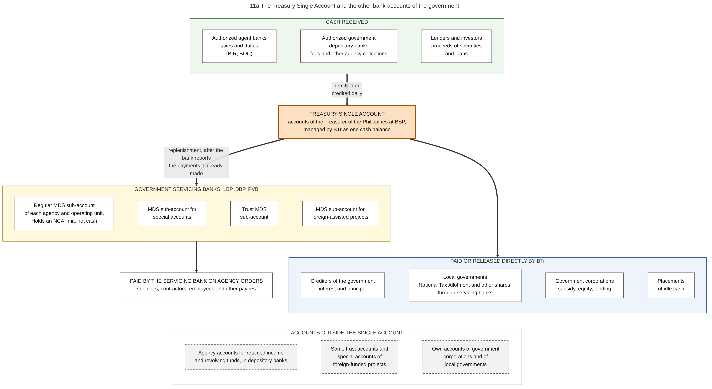
11aMermaid flowchartThe Treasury Single Account and the other bank accounts of the governmentQuestion: in which bank accounts is the cash of the national government held, and which accounts are outside the single account?Open diagram -
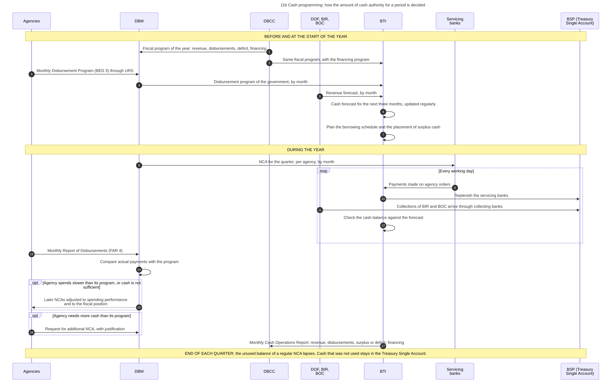
11bMermaid sequence diagramCash programming: how the amount of cash authority for a period is decidedQuestion: an agency has an allotment and an approved claim, but DBM gives it less cash authority than it asked for. Who decided the amount, and from which information?Open diagram -
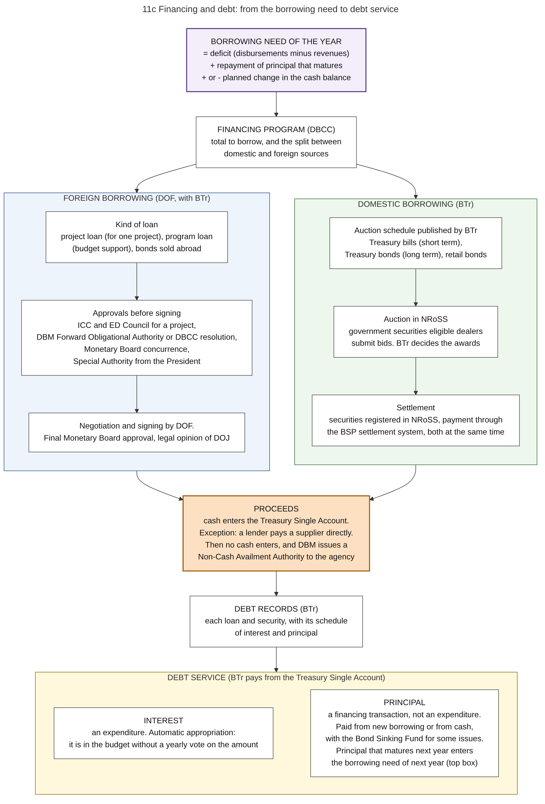
11cMermaid flowchartFinancing and debt: from the borrowing need to debt serviceQuestion: how is the amount to borrow decided, through which channels does the government borrow, which approvals are needed, and how is the debt paid?Open diagram -
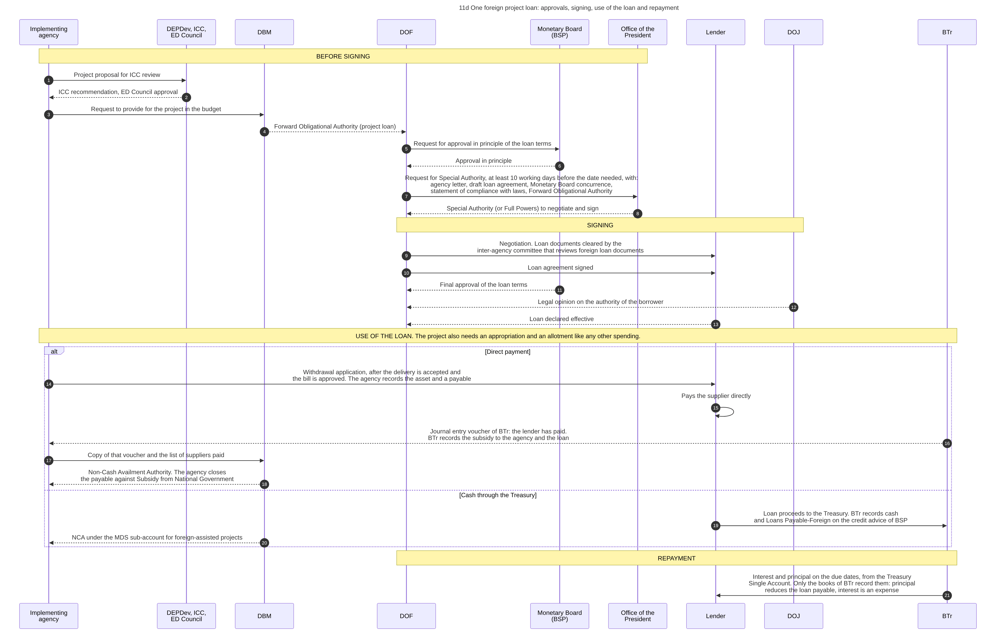
11dMermaid sequence diagramOne foreign project loan: approvals, signing, use of the loan and repaymentQuestion: a project is to be financed by a foreign loan. Which bodies must approve before the loan is signed, and how does the loan money reach the project?Open diagram
12. Personnel and payroll
-
 12aMermaid sequence diagramPersonnel spending: from an authorized position to the monthly payroll and the remittancesQuestion: salaries are paid without any procurement. What replaces the contract and the delivery, and who controls each step?Open diagram
12aMermaid sequence diagramPersonnel spending: from an authorized position to the monthly payroll and the remittancesQuestion: salaries are paid without any procurement. What replaces the contract and the delivery, and who controls each step?Open diagram -
 12bMermaid flowchartPersonnel spending: sources of the allotment, and where each part of the gross pay goesQuestion: from which budget items is personnel spending paid, and to whom does each peso of gross pay go?Open diagram
12bMermaid flowchartPersonnel spending: sources of the allotment, and where each part of the gross pay goesQuestion: from which budget items is personnel spending paid, and to whom does each peso of gross pay go?Open diagram
13. Assets and property

BUDGET PHASE
Accountability
08. Accounting and reporting
-
 08aMermaid flowchartThe records inside one agency: which unit keeps which record, from which document, and which report is built from itQuestion: inside one national agency, which unit keeps which record, from which document it is written, which unit passes its record to which other unit, and from which records are the reports built?Open diagram
08aMermaid flowchartThe records inside one agency: which unit keeps which record, from which document, and which report is built from itQuestion: inside one national agency, which unit keeps which record, from which document it is written, which unit passes its record to which other unit, and from which records are the reports built?Open diagram -
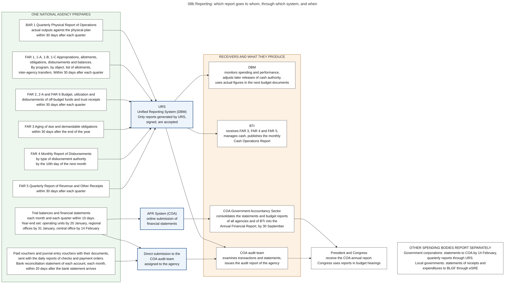
08bMermaid flowchartReporting: which report goes to whom, through which system, and whenQuestion: after a transaction is recorded, in which reports does it appear, who receives each report, and what are the deadlines?Open diagram -
 08cMermaid flowchartFive measures of the same spending: the record, the report, and the reason why each differs from the nextQuestion: for one program in one year, the budget report, the financial statements, the bank and the performance report show different amounts. Which amount measures what, and why do correct records differ?Open diagram
08cMermaid flowchartFive measures of the same spending: the record, the report, and the reason why each differs from the nextQuestion: for one program in one year, the budget report, the financial statements, the bank and the performance report show different amounts. Which amount measures what, and why do correct records differ?Open diagram -
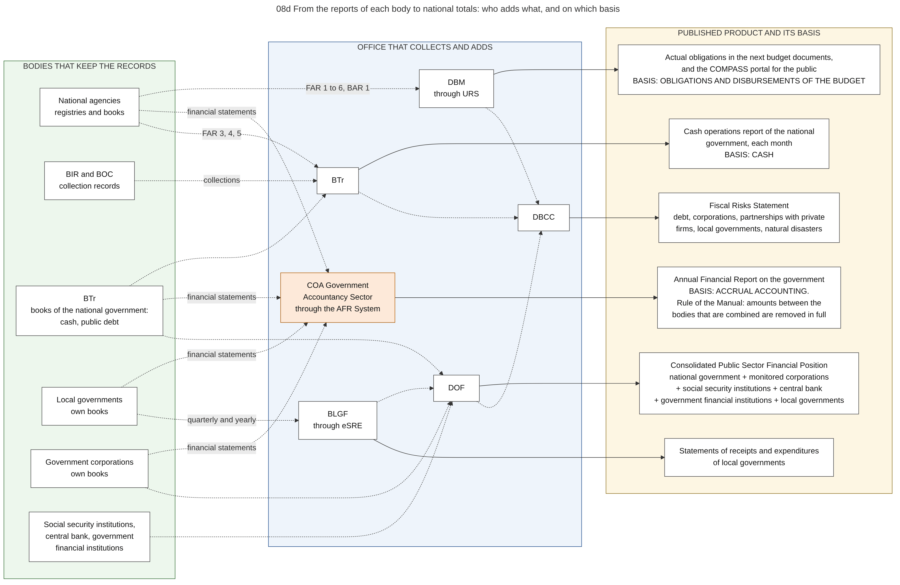
08dMermaid flowchartFrom the reports of each body to national totals: who adds what, and on which basisQuestion: no single office holds all the records. Which office adds the figures of which bodies, on which basis of measurement, and into which published product?Open diagram -
 08eMermaid flowchartOne event, several records: what each unit and each body writes for the same purchase (national agency, payment order, tax withheld)Question: for each event of one purchase, which unit of the agency and which other body writes a record, what does each record say, and where does one body record nothing although another body has recorded the event?Open diagram
08eMermaid flowchartOne event, several records: what each unit and each body writes for the same purchase (national agency, payment order, tax withheld)Question: for each event of one purchase, which unit of the agency and which other body writes a record, what does each record say, and where does one body record nothing although another body has recorded the event?Open diagram
09. Audit and oversight
-
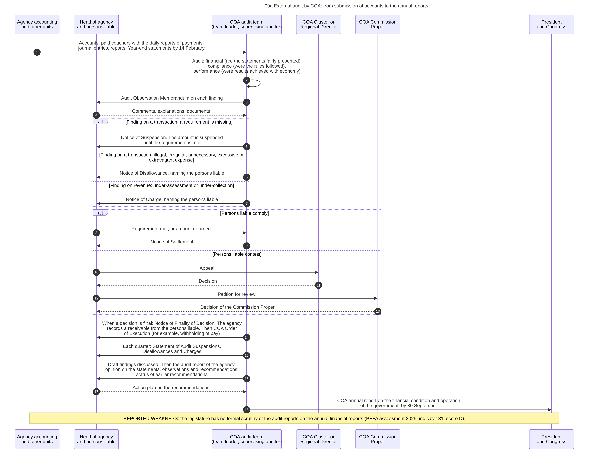
09aMermaid sequence diagramExternal audit by COA: from submission of accounts to the annual reportsQuestion: what happens between the agency and the Commission on Audit (COA) after money is spent, and how does a finding become a personal liability?Open diagram -
09bMermaid state diagramStates of one audit finding on a transactionQuestion: a transaction was questioned by the auditor. In which state is the finding now, and what are the possible next states?Open diagram
-
 09cMermaid flowchartLayers of control and oversight over one spending agencyQuestion: who checks a spending agency, at which moment (before or after the money is paid), and on what?Open diagram
09cMermaid flowchartLayers of control and oversight over one spending agencyQuestion: who checks a spending agency, at which moment (before or after the money is paid), and on what?Open diagram
18. Performance information and evaluation
-
 18aMermaid flowchartFrom a target in the budget law to a reported result: the path of performance informationQuestion: the budget law contains targets in units (for example classrooms built), not only amounts in pesos. Where is a target written, who reports the result, who checks the report, and who uses it?Open diagram
18aMermaid flowchartFrom a target in the budget law to a reported result: the path of performance informationQuestion: the budget law contains targets in units (for example classrooms built), not only amounts in pesos. Where is a target written, who reports the result, who checks the report, and who uses it?Open diagram -
 18bMermaid flowchartFour ways to examine performance, and the question that each one answersQuestion: monitoring, performance review, evaluation and audit are often named together. What is the difference between them: who does each one, when, on which records, and what may follow from it?Open diagram
18bMermaid flowchartFour ways to examine performance, and the question that each one answersQuestion: monitoring, performance review, evaluation and audit are often named together. What is the difference between them: who does each one, when, on which records, and what may follow from it?Open diagram
RELATED AND SHARED
Cross-cutting and related pathways
The big picture
-
 00aMermaid flowchartThe whole of PFM for the national government: what happens in order, what happens at the same time, and the chapter for each partQuestion: which parts form public financial management (PFM) in the Philippines, which of them follow one another, which of them happen at the same time, and which chapter of this atlas describes each one?Open diagram
00aMermaid flowchartThe whole of PFM for the national government: what happens in order, what happens at the same time, and the chapter for each partQuestion: which parts form public financial management (PFM) in the Philippines, which of them follow one another, which of them happen at the same time, and which chapter of this atlas describes each one?Open diagram -
 00bMermaid flowchartThe authorities of Philippine PFM, grouped by their position in governmentQuestion: which bodies participate in PFM, to which branch or group does each belong, and what is the role of each in one sentence?Open diagram
00bMermaid flowchartThe authorities of Philippine PFM, grouped by their position in governmentQuestion: which bodies participate in PFM, to which branch or group does each belong, and what is the role of each in one sentence?Open diagram -
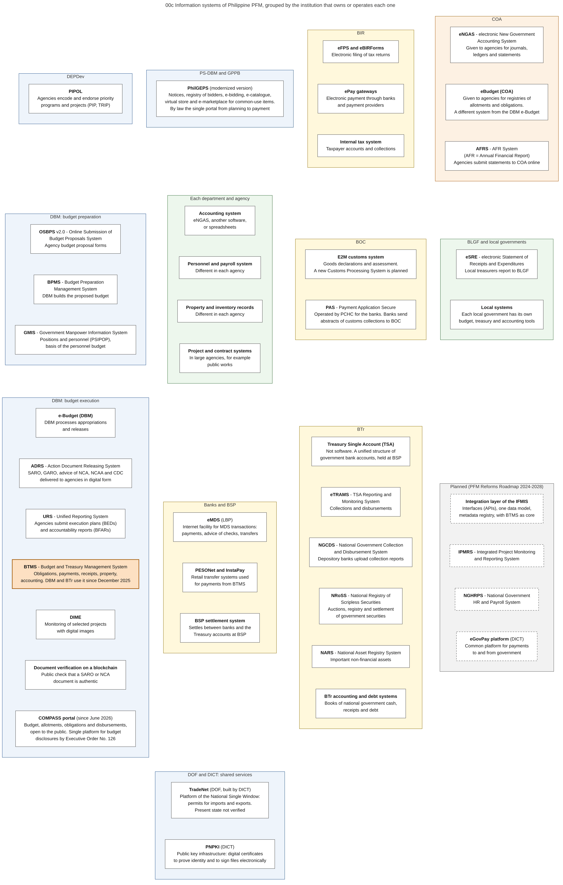
00cMermaid flowchartInformation systems of Philippine PFM, grouped by the institution that owns or operates each oneQuestion: which information systems exist, and which institution owns or operates each one?Open diagram -
 00dMermaid flowchartThree lines of steps, the three points where they must meet, and the record that each act writes (one payment under a contract)Question: which conditions must all be true before one payment to a contractor can be made, who makes each condition true, and which record is written at each act?Open diagram
00dMermaid flowchartThree lines of steps, the three points where they must meet, and the record that each act writes (one payment under a contract)Question: which conditions must all be true before one payment to a contractor can be made, who makes each condition true, and which record is written at each act?Open diagram -
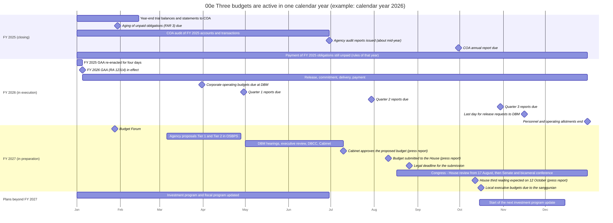
00eMermaid Gantt chartThree budgets are active in one calendar year (example: calendar year 2026)Question: at a given date, which fiscal year does each activity belong to?Open diagram -
 00fPlantUML activity diagram with lanesOne fiscal year from plan to audit: who acts at each step, and which record is written there (national government agency)Question: for one fiscal year, which authority acts at each step from plan to audit, where do two lines of work run at the same time and then have to meet, and at which step is each record written?Open diagram
00fPlantUML activity diagram with lanesOne fiscal year from plan to audit: who acts at each step, and which record is written there (national government agency)Question: for one fiscal year, which authority acts at each step from plan to audit, where do two lines of work run at the same time and then have to meet, and at which step is each record written?Open diagram -
 00gMermaid flowchartWhat passes between the authorities: decisions, money and informationQuestion: for each pair of authorities, what does one give to the other?Open diagram
00gMermaid flowchartWhat passes between the authorities: decisions, money and informationQuestion: for each pair of authorities, what does one give to the other?Open diagram -
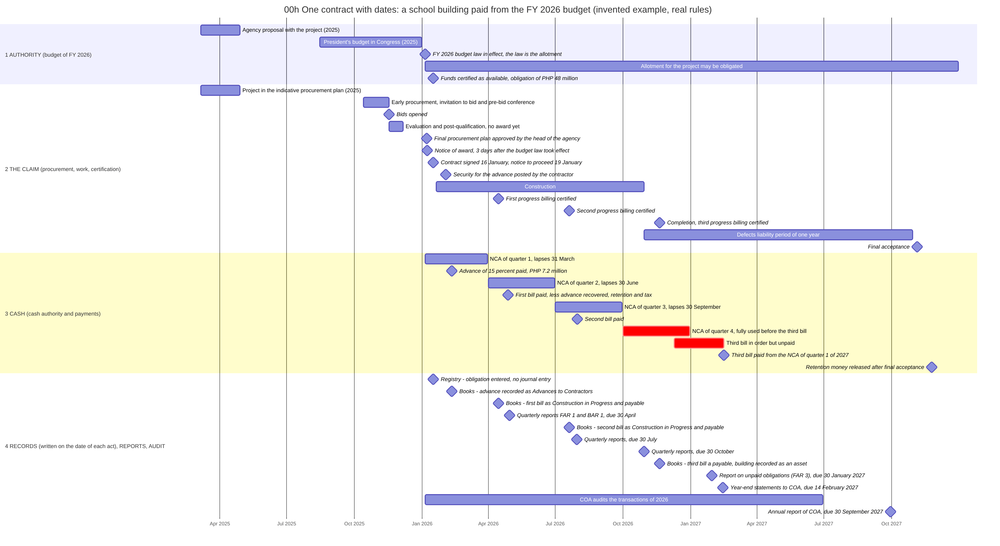
00hMermaid Gantt chartOne contract with dates: a school building paid from the FY 2026 budget (invented example, real rules)Question: the other diagrams show the order of steps. How long does each step take for one contract, in which fiscal year does each step occur, and on which date is each record written?Open diagram
10. Revenue and other receipts
-
 10aMermaid flowchartReceipts of the national government: kinds, collectors, and the fund each receipt entersQuestion: which kinds of money does the national government receive, who collects each kind, and may the collecting agency use the money?Open diagram
10aMermaid flowchartReceipts of the national government: kinds, collectors, and the fund each receipt entersQuestion: which kinds of money does the national government receive, who collects each kind, and may the collecting agency use the money?Open diagram -
 10bMermaid sequence diagramCollection of taxes and customs duties: from the taxpayer to the Treasury Single AccountQuestion: BIR and BOC assess taxes, but they do not hold the money. Through which channels does the money reach the Treasury, and which records must agree afterwards?Open diagram
10bMermaid sequence diagramCollection of taxes and customs duties: from the taxpayer to the Treasury Single AccountQuestion: BIR and BOC assess taxes, but they do not hold the money. Through which channels does the money reach the Treasury, and which records must agree afterwards?Open diagram -
 10cMermaid flowchartFees and other income collected by an agency: from payment to the correct fundQuestion: an agency collects a fee. What must the collecting officer do with the money, and under which condition may the agency itself spend it?Open diagram
10cMermaid flowchartFees and other income collected by an agency: from payment to the correct fundQuestion: an agency collects a fee. What must the collecting officer do with the money, and under which condition may the agency itself spend it?Open diagram -
 10dMermaid sequence diagramA tax refund: how money collected as tax is paid backQuestion: a tax that was collected must sometimes be returned. From which authority is it paid, and how does it change the reported collections?Open diagram
10dMermaid sequence diagramA tax refund: how money collected as tax is paid backQuestion: a tax that was collected must sometimes be returned. From which authority is it paid, and how does it change the reported collections?Open diagram
14. Local governments
-
 14aMermaid sequence diagramBudget cycle of a local government unit (province, city or municipality) under the Local Government CodeQuestion: a local government has its own budget, separate from the GAA. Who prepares, enacts, reviews and executes it, and by which dates?Open diagram
14aMermaid sequence diagramBudget cycle of a local government unit (province, city or municipality) under the Local Government CodeQuestion: a local government has its own budget, separate from the GAA. Who prepares, enacts, reviews and executes it, and by which dates?Open diagram -
 14bMermaid flowchartMoney of a local government: sources, and the limits that every local budget must respectQuestion: where does the money of a local government come from, and which parts of its budget are fixed by national law?Open diagram
14bMermaid flowchartMoney of a local government: sources, and the limits that every local budget must respectQuestion: where does the money of a local government come from, and which parts of its budget are fixed by national law?Open diagram -
 14cMermaid flowchartPoints of contact between the national PFM system and a local governmentQuestion: a local government follows its own cycle. At which points does a national body give it money, review its decisions, or receive its reports?Open diagram
14cMermaid flowchartPoints of contact between the national PFM system and a local governmentQuestion: a local government follows its own cycle. At which points does a national body give it money, review its decisions, or receive its reports?Open diagram -
 14dPlantUML activity diagram with lanesLocal budget cycle: decision points and their effects (province, city or municipality)Question: in the local budget cycle, where are the decision points, and what happens at each one if the answer is "no"?Open diagram
14dPlantUML activity diagram with lanesLocal budget cycle: decision points and their effects (province, city or municipality)Question: in the local budget cycle, where are the decision points, and what happens at each one if the answer is "no"?Open diagram -
 14eMermaid flowchartMoney that a local government raises itself: real property tax and loansQuestion: diagram 14b shows the share in national taxes. Which steps and which outside approvals does a local government need for the two main sources that it controls itself: the tax on real property, and loans?Open diagram
14eMermaid flowchartMoney that a local government raises itself: real property tax and loansQuestion: diagram 14b shows the share in national taxes. Which steps and which outside approvals does a local government need for the two main sources that it controls itself: the tax on real property, and loans?Open diagram -
 14fMermaid sequence diagramThe budget of a barangay: who prepares, who enacts, who reviewsQuestion: a barangay is the smallest local government. Who performs the roles of executive, legislature and reviewer for its budget, and who keeps its books?Open diagram
14fMermaid sequence diagramThe budget of a barangay: who prepares, who enacts, who reviewsQuestion: a barangay is the smallest local government. Who performs the roles of executive, legislature and reviewer for its budget, and who keeps its books?Open diagram
15. Government corporations, fund transfers, other spending paths, and fund clusters
-
 15aMermaid sequence diagramGovernment corporations (GOCCs): corporate operating budget, budgetary support and reportsQuestion: a government corporation is not an agency in the GAA. Who approves its budget, how does national money reach it, and what does it return?Open diagram
15aMermaid sequence diagramGovernment corporations (GOCCs): corporate operating budget, budgetary support and reportsQuestion: a government corporation is not an agency in the GAA. Who approves its budget, how does national money reach it, and what does it return?Open diagram -
 15bMermaid sequence diagramTransfer of funds from one agency to another body that will implementQuestion: an agency gives its money to another agency, a corporation or a local government to implement a project. When is the money "spent", and who is responsible for it?Open diagram
15bMermaid sequence diagramTransfer of funds from one agency to another body that will implementQuestion: an agency gives its money to another agency, a corporation or a local government to implement a project. When is the money "spent", and who is responsible for it?Open diagram -
 15cMermaid flowchartThe path after allotment depends on the kind of spendingQuestion: chapters 06 and 07 follow one purchase by one agency. Which other paths does public money take, and which steps does each path omit?Open diagram
15cMermaid flowchartThe path after allotment depends on the kind of spendingQuestion: chapters 06 and 07 follow one purchase by one agency. Which other paths does public money take, and which steps does each path omit?Open diagram -
 15dMermaid flowchartFund clusters: seven groups of money inside one agency, each with its own books and reportsQuestion: an agency handles money from the GAA, from loans, from its own income and from other parties. How are these separated, and which report covers each group?Open diagram
15dMermaid flowchartFund clusters: seven groups of money inside one agency, each with its own books and reportsQuestion: an agency handles money from the GAA, from loans, from its own income and from other parties. How are these separated, and which report covers each group?Open diagram -
 15eMermaid flowchartMoney for disasters: standby funds of agencies, the national fund, and the fund of each local governmentQuestion: after a disaster, money is needed within days, and the normal path (release request, procurement, payment) takes months. Which money is already available, who must approve the rest, and which records show the use?Open diagram
15eMermaid flowchartMoney for disasters: standby funds of agencies, the national fund, and the fund of each local governmentQuestion: after a disaster, money is needed within days, and the normal path (release request, procurement, payment) takes months. Which money is already available, who must approve the rest, and which records show the use?Open diagram -
 15fMermaid sequence diagramCash aid to persons: from the list of beneficiaries to the credit in each accountQuestion: in a purchase, one supplier delivers and one voucher is paid. In a cash aid program, one payment order pays many thousands of persons and nothing is delivered to the government. What replaces the contract, the delivery and the acceptance?Open diagram
15fMermaid sequence diagramCash aid to persons: from the list of beneficiaries to the credit in each accountQuestion: in a purchase, one supplier delivers and one voucher is paid. In a cash aid program, one payment order pays many thousands of persons and nothing is delivered to the government. What replaces the contract, the delivery and the acceptance?Open diagram
16. Information systems and the IFMIS
-
 16aMermaid flowchartInformation systems by PFM function: in use today, and planned under the IFMISQuestion: for each PFM function, which system holds the record today, who owns it, and what does the PFM Reforms Roadmap plan for that function?Open diagram
16aMermaid flowchartInformation systems by PFM function: in use today, and planned under the IFMISQuestion: for each PFM function, which system holds the record today, who owns it, and what does the PFM Reforms Roadmap plan for that function?Open diagram -
 16bPlantUML component diagramSpending side: information systems inside their owner institutions, and what passes between them (2026)Question: on the SPENDING side (plan, budget, release, procurement, payment, reports, audit), which information system belongs to which institution, what passes from one system or body to another today, and by which carrier?Open diagram
16bPlantUML component diagramSpending side: information systems inside their owner institutions, and what passes between them (2026)Question: on the SPENDING side (plan, budget, release, procurement, payment, reports, audit), which information system belongs to which institution, what passes from one system or body to another today, and by which carrier?Open diagram -
 16cMermaid flowchartBTMS Budget Execution Module: records, the links between them, and the checks made by the systemQuestion: when an agency works in the Budget and Treasury Management System (BTMS), which records does it create, how is each record linked to the one before, and which rules does the system enforce by itself?Open diagram
16cMermaid flowchartBTMS Budget Execution Module: records, the links between them, and the checks made by the systemQuestion: when an agency works in the Budget and Treasury Management System (BTMS), which records does it create, how is each record linked to the one before, and which rules does the system enforce by itself?Open diagram -
 16dMermaid flowchartPlanned IFMIS: BTMS as the core, other systems connected through interfacesQuestion: what is the Integrated Financial Management Information System (IFMIS) meant to be, and what is the place of BTMS in it?Open diagram
16dMermaid flowchartPlanned IFMIS: BTMS as the core, other systems connected through interfacesQuestion: what is the Integrated Financial Management Information System (IFMIS) meant to be, and what is the place of BTMS in it?Open diagram -
 16eMermaid timelineDigital PFM in the Philippines - main events, 2011 to 2028Question: in which order did the rules and systems of digital PFM appear, and what is planned up to 2028?Open diagram
16eMermaid timelineDigital PFM in the Philippines - main events, 2011 to 2028Question: in which order did the rules and systems of digital PFM appear, and what is planned up to 2028?Open diagram -
 16fMermaid sequence diagramPublic verification of DBM release documents with a blockchain recordQuestion: what does the blockchain application of DBM record, who can check it, and what does a successful check prove?Open diagram
16fMermaid sequence diagramPublic verification of DBM release documents with a blockchain recordQuestion: what does the blockchain application of DBM record, who can check it, and what does a successful check prove?Open diagram -
 16gPlantUML component diagramRevenue and treasury side: information systems and accounts inside their owner institutions (2026)Question: on the REVENUE AND TREASURY side (taxes, customs, agency collections, cash, borrowing), which information system belongs to which institution, and what passes from one system to another today?Open diagram
16gPlantUML component diagramRevenue and treasury side: information systems and accounts inside their owner institutions (2026)Question: on the REVENUE AND TREASURY side (taxes, customs, agency collections, cash, borrowing), which information system belongs to which institution, and what passes from one system to another today?Open diagram
17. UACS and the identifiers of records
-
 17aMermaid flowchartStructure of the Unified Accounts Code Structure (UACS): 54 digits in five segmentsQuestion: what does a full UACS code say about one line of money, and which part of the code answers which question?Open diagram
17aMermaid flowchartStructure of the Unified Accounts Code Structure (UACS): 54 digits in five segmentsQuestion: what does a full UACS code say about one line of money, and which part of the code answers which question?Open diagram -
 17bMermaid flowchartThe chain of records for one purchase: each record's own number, the codes it contains, and the number that connects it to the next recordQuestion: to follow one purchase from the budget line to the payment, the asset and the audit, which number connects each record to the next one, on which form is that number written, and where is there no such number?Open diagram
17bMermaid flowchartThe chain of records for one purchase: each record's own number, the codes it contains, and the number that connects it to the next recordQuestion: to follow one purchase from the budget line to the payment, the asset and the audit, which number connects each record to the next one, on which form is that number written, and where is there no such number?Open diagram -
 17cMermaid entity-relationship diagramRecords of budget execution as a data model: fields, own numbers (PK) and quoted numbers (FK)Question: if the records of 17b were tables in one database, which fields would each table have, and by which field would two tables be joined?Open diagram
17cMermaid entity-relationship diagramRecords of budget execution as a data model: fields, own numbers (PK) and quoted numbers (FK)Question: if the records of 17b were tables in one database, which fields would each table have, and by which field would two tables be joined?Open diagram -
 17dMermaid flowchartWhy UACS alone cannot follow one contract: a code names a class, a document number names one recordQuestion: is UACS the key that connects all PFM records? For which questions is it enough, and for which is it not?Open diagram
17dMermaid flowchartWhy UACS alone cannot follow one contract: a code names a class, a document number names one recordQuestion: is UACS the key that connects all PFM records? For which questions is it enough, and for which is it not?Open diagram
19. Fiscal risks, public-private partnerships and contingent liabilities
-
 19aMermaid flowchartFiscal risks: payments that the Treasury may have to make, although no budget line of today names themQuestion: the budget law lists the spending that is decided. Which possible payments are not decided, where could they come from, who monitors each source, and from which authority would a payment be made if the event occurs?Open diagram
19aMermaid flowchartFiscal risks: payments that the Treasury may have to make, although no budget line of today names themQuestion: the budget law lists the spending that is decided. Which possible payments are not decided, where could they come from, who monitors each source, and from which authority would a payment be made if the event occurs?Open diagram -
 19bPlantUML activity diagram with lanesA national public-private partnership: approvals, promises of the government, and the two links to the budgetQuestion: in a public-private partnership a private firm pays for the construction and the government pays later, or promises to pay if a stated event occurs. Which bodies approve such a project, and at which points does it enter the budget?Open diagram
19bPlantUML activity diagram with lanesA national public-private partnership: approvals, promises of the government, and the two links to the budgetQuestion: in a public-private partnership a private firm pays for the construction and the government pays later, or promises to pay if a stated event occurs. Which bodies approve such a project, and at which points does it enter the budget?Open diagram